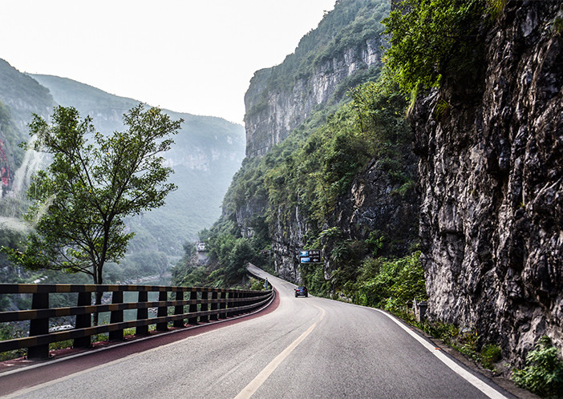
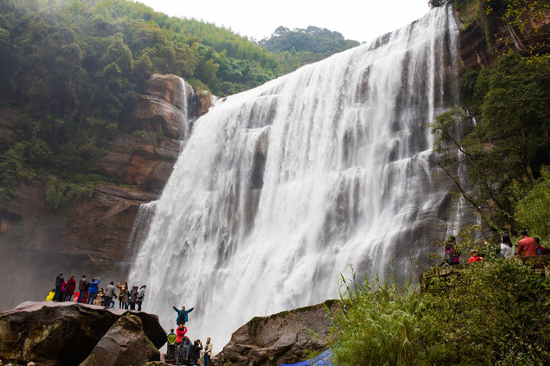
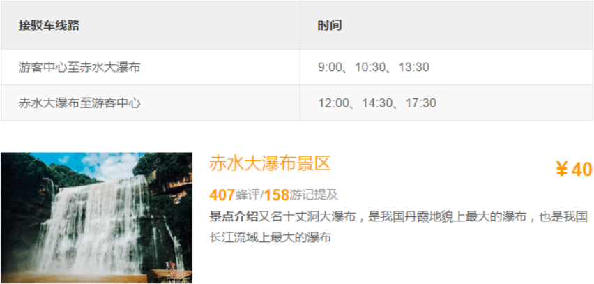
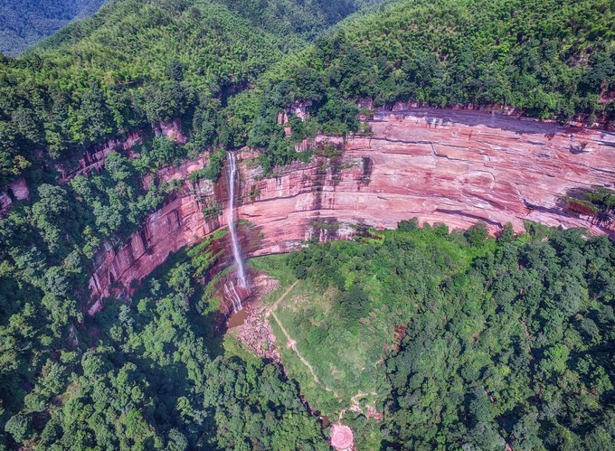
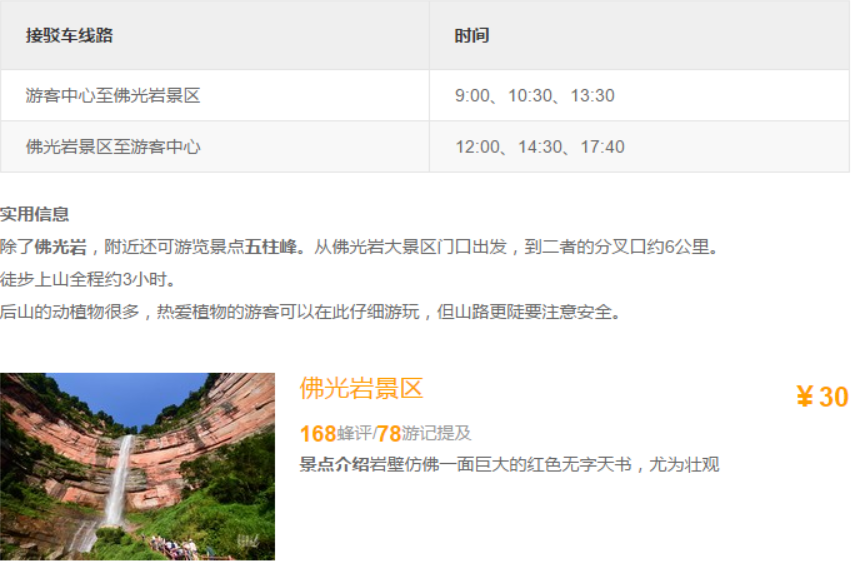
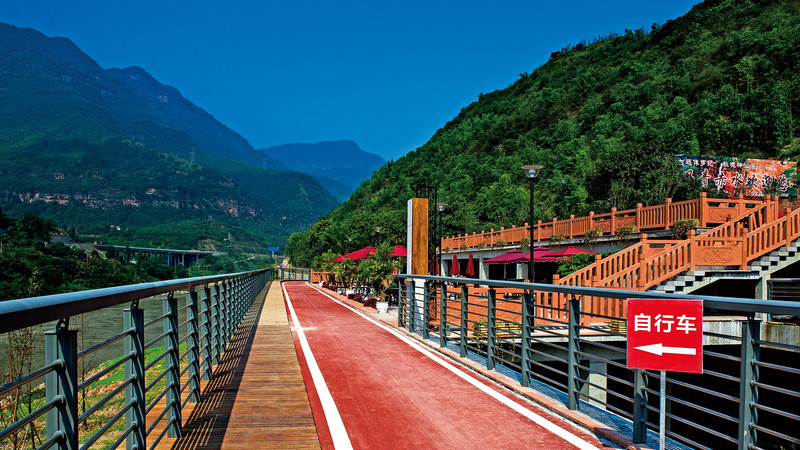
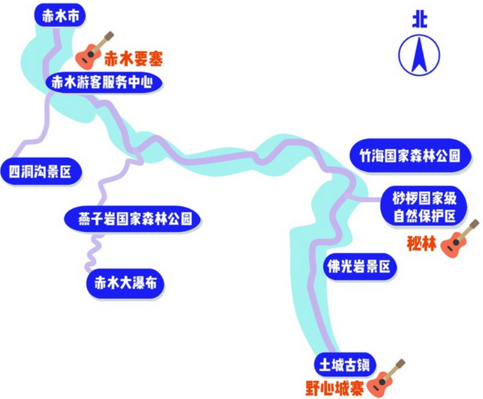
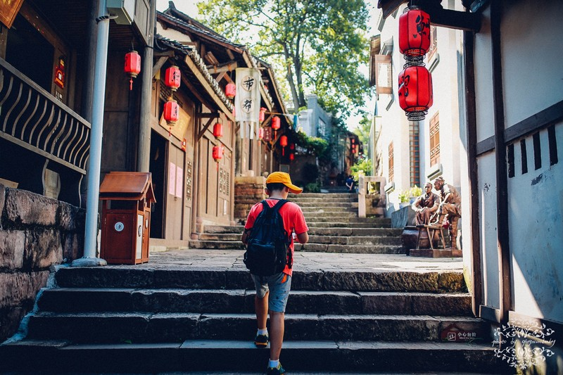
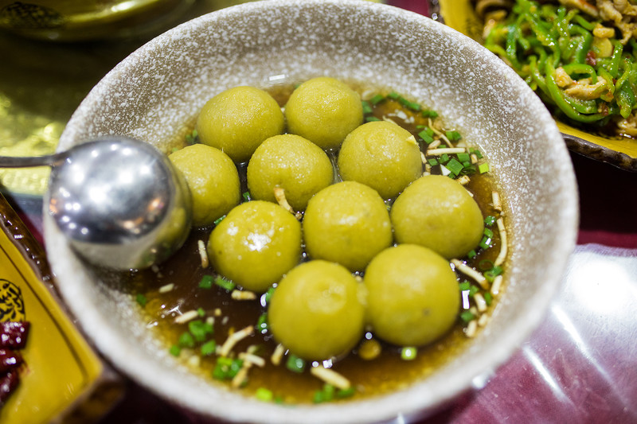

赤水河谷必体验TOP6
赤水河谷旅游公路起于仁怀市茅台镇，途经习水县土城镇，止于赤水市。红色的自行车道和黑色的公路并肩而行、相依相偎形成一道美丽的风景，游走其中，体验真正的“车在景中走，人在画中游”。(ﾉ´▽｀)ﾉ♪

赤水河谷一条美丽的旅游文化长廊：一端连着中国第一酒镇茅台镇，另一端连着世界自然遗产丹霞地貌赤水市，中间串起四渡赤水红色文化、国酒文化、巴国文化、盐运文化、考古文化等，一路下来，风景众多，独特的喀斯特地貌景观和河光山色尽收眼底。
必体验：观壮阔瀑布
丹霞瀑布是赤水地区最富代表性的景观，或壮阔，或精致，白练一般的瀑布从赤色崖壁上奔涌坠落，珠玉晶莹四溅，构成一幅幅绝景。
赤水大瀑布


必体验：徒步丹霞
在赤水地区徒步，有众多景点可以选择，佛光岩和燕子岩等景区面积大，栈道通畅，又不失野趣，行走在赤水的山林瀑布之间，听着鸟鸣泉吟，可以充分亲近自然。
佛光岩景区


必体验：河谷骑行
骑行在赤水无疑是所有户外体验的首选，全长160多公里的红色自行车道就铺设在赤水河边，与旅游公路并行修建又互不干涉。骑行车道起点位于茅台驿站，最终抵达赤水大桥，沿途有12个大型驿站和多个休息区，停驻游玩非常方便。

必体验：赤水河谷音乐季
在赤水河谷，不仅能尽情玩山玩水放飞野心，还能大饱耳福。2017年11月的首次音乐季的三个舞台--赤水要塞、野心城寨和秘林，不仅音乐风格独特，场地造型迥异，相距数十里，还各个都野出了新天际！

必体验：闲逛古镇
元明时期，盐业的兴盛和船运的发达兴起不少繁忙码头，这其中，“十八帮”汇聚地土城古镇、“石上城堡”丙安古镇、独竹漂发源地大同古镇，都留下了很多的特色城镇，等待着喜欢仿古的人们去一探究竟。

必体验：品特色美食
赤水地处巴蜀和黔北之间，在饮食上吸收了两地的风味，味道上更靠近川味，却仍能看见折耳根炒腊肉这样的贵州的代表菜肴。最具代表性的食材要属豆花、腊肉和变着花样来吃的竹笋、竹荪了。再走走赤水的大街小巷，随处可见各类风味小吃，猪儿粑、凉虾、凉糕、凉面、黄粑等，来到赤水河谷，你要做的就是启动味蕾，来一趟美食之旅。
